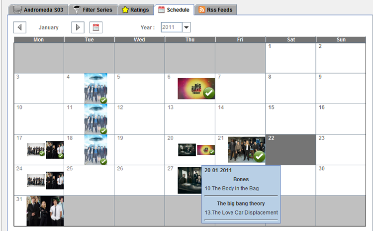
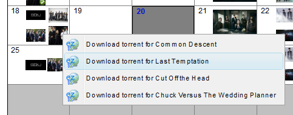

| The Schedule panel |
|---|
|
 |
|
The schedule panel displays a calendar with the series screenshots on the days when an
episode is aired(If no screenshot is provided the default MySerieS logo is displayed.) Mousing over a calendar's day will display information about the show and the episode. If an episodes has been aired and not downloaded right clicking on the day will bring up the download episode popup to let you download the episode from eztv.  |